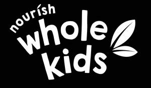

Trade Mark Journal No.2025/048 28 November 2025
UK00004297574 20 November 2025 (29,30,31,32)

- Class 29
- Fruit based snack foods; Fruit-based snack food; Snack food (Fruit-based -); Vegetable-based snack food; Snack foods based on vegetables; Potato snack foods; Vegetable-based snack foods; Cheese-based snack foods; Potato-based snack foods; Soy-based snack foods; Snack mixes consisting of dehydrated fruit and processed nuts; Soy-based food bars; Snack foods based on nuts; Snack foods based on legumes; Fruit- and nut-based snack bars; Nut and seed-based snack bars; Nut-based food bars; Organic nut and seed-based snack bars; Nut-based snack foods; Fruit snacks; Sweet corn-based snack foods; Coconut-based snacks; Potato snacks; Tofu-based snacks; Dried fruit; Dried fruits; Dried fruit products; Dried fruit mixes; Vegetables, dried; Dried vegetables; Dried mangoes; Dried strawberries; Dried blueberries; Dried pineapples; Dried fruit-based snacks; Potato crisps in the form of snack foods; Legume-based snacks; Snacks of edible seaweed; Vegetable-based prepared meals for toddlers; Tofu-based snack food; Fruit desserts; Fruit chips; Chips (Fruit -); Fruit jams; Fruit Powders; Fruit rinds; Mixtures of fruit and nuts; Prepared fruits; Processed Pulses; Canned pulses; Dried pulses; Preserved pulses; Processed fruits, fungi, vegetables, nuts and pulses.
- Class 30
- Snack food products consisting of cereal products; Maize based snack products; Cereal based snack foods; Snack food products made from rice; Snack food products made from cereals; Snack food products made from potato flour; Snack food products made from cereal starch; Snack food products made from cereal flour; Snack food products made from soya flour; Snack food products made from rice flour; Snack food products made from maize flour; Cereal based prepared snack foods; Snack food products made from rusk flour; Cereal-based snack food; Snack food (Cereal-based -); Cereal based food bars; Rice-based snack food; Snack food (Rice-based -); Cereal based snacks; Starch products for food; Snack products made of cereals; Cereal snack foods flavoured with cheese; Rice-based snack foods; Wheat-based snack foods; Corn-based snack foods; Extruded food products made of rice; Grain-based snack foods; Snack foods made from wheat; Snack foods made of wheat; Oat-based food; Snack foods made from cereals; Snack foods made from corn; Snack foods consisting principally of rice; Flavourings of almond for food or beverages; Extruded food products made of wheat; Snack foods prepared from potato flour; Extruded food products made of maize; Snack foods consisting principally of pasta; Flour based savory snacks; Multigrain-based snack foods; Snack foods prepared from maize; Snack foods made from corn and in the form of puffs; Chips [cereal products]; Ready to eat savory snack foods made from maize meal formed by extrusion; Snack foods consisting principally of grain; Snack foods made from corn and in the form of rings; Cereal based foodstuffs for human consumption; Snack foods made of whole wheat; Snack foods consisting principally of extruded cereals; Cereal-based snack bars; Cereal breakfast foods; Processed cereals for food for human consumption; Oat-based food for human consumption; Snack bars containing a mixture of grains, nuts and dried fruit [confectionery]; Cereal products in bar form; Flavourings for snack foods [other than essential oils]; Ready-to-eat cereal-derived food bars; Cereal snacks; Cereal preparations consisting of bran; Breakfast cereals containing fruit; Cereals; Food mixtures consisting of cereal flakes and dried fruits; Cereal seeds, processed; Breakfast cereals made of rice; Snacks manufactured from cereals; Foods produced from baked cereals; Breakfast cereals containing a mixture of fruit and fibre; High-protein cereal bars; Cereal bars; Breakfast cereals containing fibre; Breakfast cereals; Processed cereals; Cereals, processed; Cereals for use in making pasta; Foodstuffs made from cereals; Pre-packaged lunches consisting primarily of rice, and also including meat, fish or vegetables; Snacks manufactured from muesli; Meals consisting primarily of rice; Breakfast cereals, porridge and grits; Cereal preparations; Ready-to-eat cereals; Foodstuffs made of rice; Foodstuffs made from oats; Foodstuffs made from maize; Cereal bars and energy bars; Muesli bars; Cereal-based bars; Oat bars; Cereal based energy bars; Crispbread snacks; Cereal-based savoury snacks; Oat-based foods; Rice snacks; Rice cake snacks; Extruded wheat snacks; Extruded corn snacks; Cheese balls [snacks]; Cheese curls [snacks]; Corn-based savoury snacks; Snacks made from muesli; Fruit cake snacks; Pastries with fruit; Fruit pastries; Fruit breads; Crackers flavoured with fruit; Biscuits flavoured with fruit; Biscuits; Shortbread biscuits; Savoury biscuits; Butter biscuits; Cheese-flavored biscuits; Wafers [biscuits]; Biscuits for cheese; Toasts [biscuits]; Savory biscuits; Rice biscuits; Wafer biscuits; Malt biscuits; Pastries, cakes, tarts and biscuits (cookies); Salted biscuits; Rolled wafers [biscuits]; Biscuits [sweet or savoury]; Salted wafer biscuits; Biscuit rusk; Biscuits containing fruit; Biscuits for human consumption made from cereals; Oat biscuits for human consumption; Rusks; Sweet biscuits for human consumption; Crisps made of cereals; Muesli desserts; Crackers flavoured with spices; Wholewheat crisps; Crackers flavoured with meat; Malt cakes; Crackers flavoured with herbs; Rice cakes; Cakes (Rice -); Puffed cheese balls [corn snacks]; Crackers flavoured with vegetables; Potato flour confectionery; Cheese flavored puffed corn snacks; Cake bars; Pastries containing fruit; Fruit bread; Pastries filled with fruit; Bread casings filled with fruit; Rice-based prepared meals; Gluten prepared as foodstuff; Pasta-based prepared meals; Prepared rice; Prepared pasta.
- Class 31
- Grains [cereals]; Fresh pulses; Grains [seeds].
- Class 32
- Fruit beverages; Fruit beverages and fruit juices; Fruit drinks; Fruit juice beverages; Fruit juice for use as beverages; Smoothies [fruit beverages, fruit predominating]; Fruit juice drinks; Fruit flavored drinks; Frozen fruit beverages; Fruit smoothies; Iced fruit beverages; Smoothies [non-alcoholic fruit beverages]; Fruit juice beverages (Non-alcoholic -); Non-alcoholic fruit juice beverages; Fruit flavoured drinks; Fruit juice; Juice (Fruit -); Non-alcoholic dried fruit beverages; Non-alcoholic fruit drinks; Fruit juices; Non-alcoholic beverages containing fruit juices; Apple juice beverages; Organic fruit juice; Beverages consisting of a blend of fruit and vegetable juices; Fruit nectars, non-alcoholic; Nectars (Fruit -), non-alcoholic; Fruit juice bases; Apple juice drinks; Vegetable juices [beverages]; Pineapple juice beverages; Fruit nectars; Fruit nectars, nonalcoholic; Aerated fruit juices; Mixed fruit juice; Grape juice beverages; Mixed fruit juices; Smoothies; Vegetable smoothies; Coconut juice; Mango juice; Smoothies containing grains and oats; Juice drinks; Green vegetable juice beverages; Watermelon juice; Orange juice drinks; Frozen fruit drinks; Concentrated fruit juice.
HANDS (IP) HOLDINGS PTY LTD
Hands (IP) HOLDINGS PTY LTD